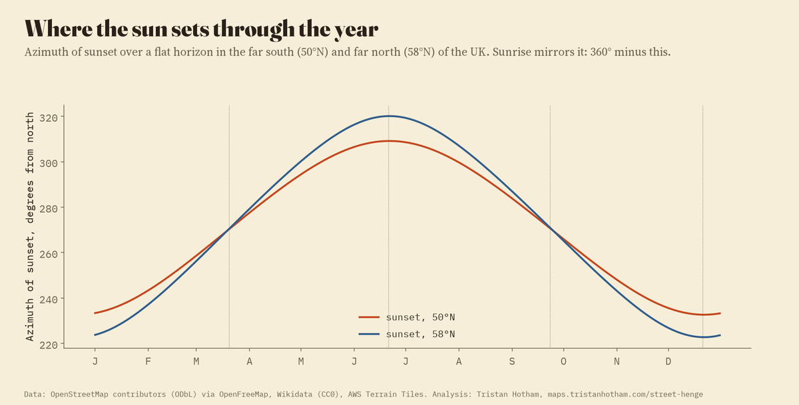
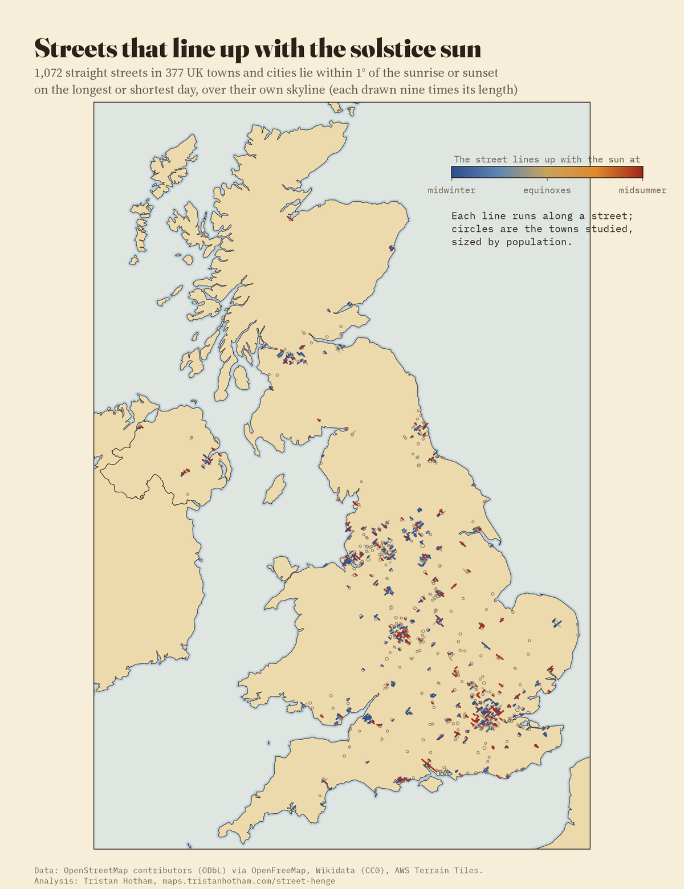
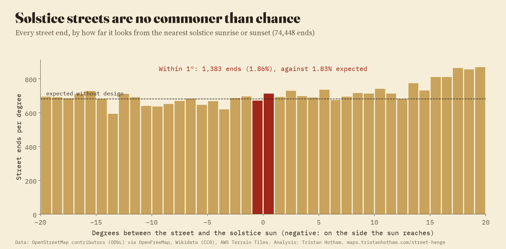
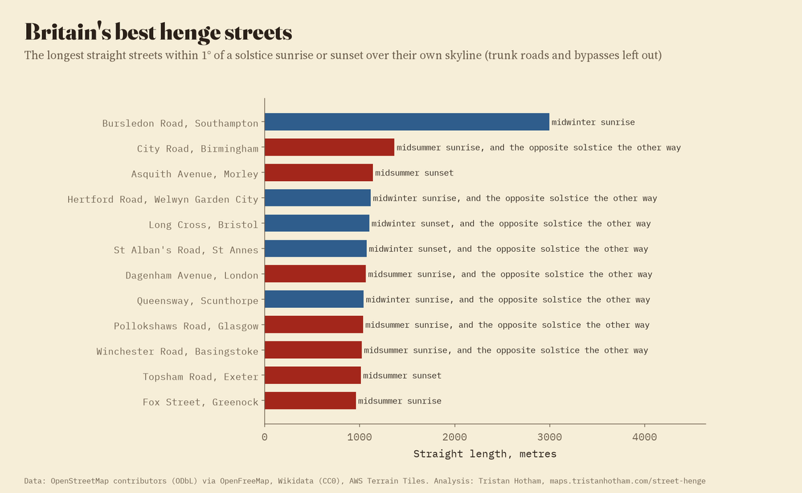
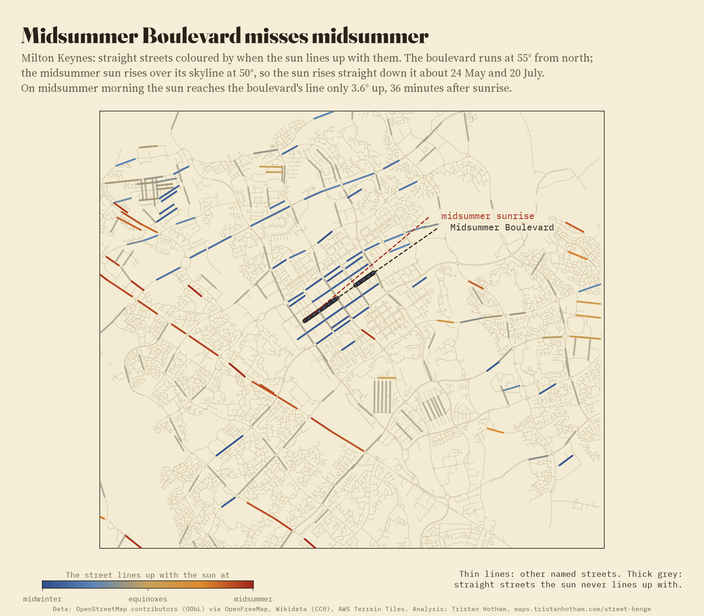
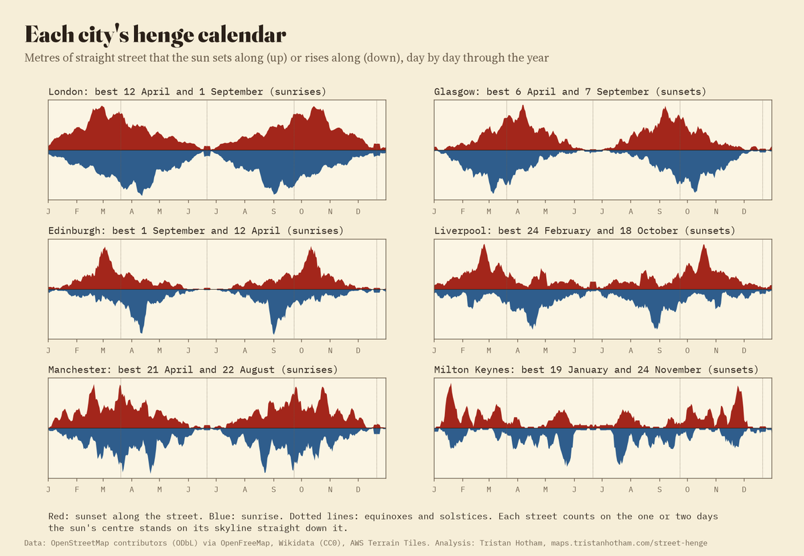
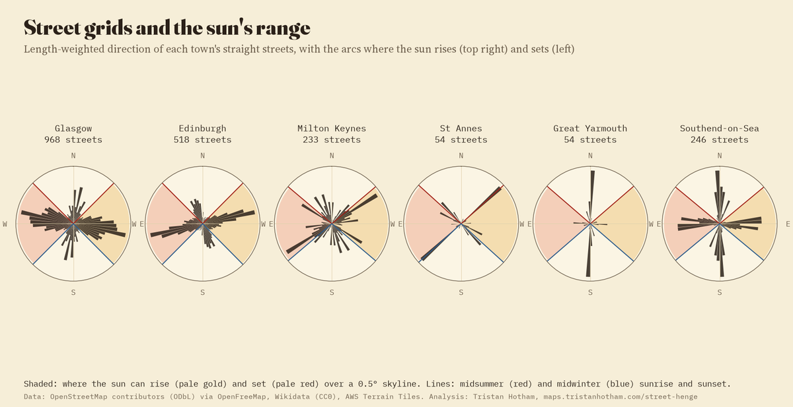

37,224 straight named streets in 377 towns and cities. Tap a town to see its streets coloured by the season when the sun sets (or rises) straight down them, then slide the date.
Twice a year, in late May and mid July, crowds gather on the cross streets of Manhattan to watch the sun set exactly at the end of the street, framed by the towers on either side. New Yorkers call it Manhattanhenge. Every town with straight streets has its own version, on its own dates. So I worked them out for every town and city in the United Kingdom of more than 25,000 people.
From the OpenStreetMap street map I found every named street with a straight stretch of at least 300 m: 37,224 of them in 377 towns, 15,638 km in all. For each one I worked out where the sun would have to stand to sit on the skyline straight down the street, looking each way, allowing for the hills at the end of the view, and so on which days of the year that happens.
The sun only rises and sets in two arcs of the compass. In the far south of the UK, at 50°N, the midsummer sun sets at 309.1° from north and the midwinter sun at 232.6°; in the far north, at 58°N, the arc widens to 222.7° to 320.1°. A street that runs anywhere near north to south never catches the sun down its length. One that runs across the arc catches it twice a year, on dates either side of a solstice; one that runs at the very edge catches it once, at the solstice itself. 18,405 of the 37,224 straight streets (49%) catch it at least once.

Where the sun sets through the year, over a flat horizon.
1,072 streets lie within 1° of the sunrise or sunset on the longest or shortest day, over their own skyline, and 1,849 within 2°. A street that lines up with the midsummer sunrise at one end usually lines up with the midwinter sunset at the other, as at Stonehenge: 311 do both. The longest true street among them is Bursledon Road in Southampton, 2,995 m dead straight towards the midwinter sunrise; then City Road in Birmingham (1,365 m, midsummer sunrise) and Asquith Avenue in Morley (1,139 m, midsummer sunset).
But are there more of them than chance would give? Taking every street end and asking how far it looks from the solstice sun, the count within 1° is 1.86% of ends, against 1.83% for the same streets a few degrees either side. There is no spike at the solstice: British streets line up with it about as often as they would if nobody had ever thought about the sun. A few towns have more than their share, St Annes on the Fylde coast (21 street ends against 3.2 expected) and Bournemouth (22 against 6.8), because their grids happen to run that way; nothing suggests the sun was the reason.

Every street within 1° of a solstice sunrise or sunset, drawn nine times its length.

No peak at zero: streets line up with the solstice as often as chance would give.

The longest henge streets, trunk roads and bypasses left out.
Milton Keynes is the town where the story is usually told: its central avenue, Midsummer Boulevard, is said to point at the midsummer sunrise. The map says otherwise. The boulevard runs at 55.1° from north. Over its eastern skyline the midsummer sun rises at 50.1° (over a flat horizon it would be 48.7°), so the boulevard misses it by 4.0° to 6.7° along its length. The sun rises straight down Midsummer Boulevard about 24 May and 20 July, a month either side of midsummer. The town's grid as a whole runs at 59.1°, and just 7 of its 233 straight streets line up with a solstice. Maps and surveys can differ by a degree or two, but not by five.
The planners' own words were more careful than the legend. David Lock, the city centre's planner, said you could tell people the sun rises at the end of it on Midsummer's Day, "which it nearly does"; the chief architect, Stuart Mosscrop, said the first match with the solstice was a coincidence and the grid was then moved slightly to suit it. And on midsummer morning the sun does stand straight down the boulevard, just not at sunrise: it gets there about 36 minutes after the first gleam, 3.6° up. From the low western end by the station, looking up the hill, the land alone rises 1.2° and the trees and buildings on the crest add more, so a watcher there can see the sun come up over the top on the line of the road. Over the open horizon to the east, as from Campbell Park, the midsummer sunrise is well to the left of the axis.

Milton Keynes. Dashed: the boulevard's line and the midsummer sunrise over its skyline.
For each town, adding up the metres of street that line up with the sun day by day gives a henge calendar. Where a town has a strong grid, it has clear henge days. Glasgow's grid is turned only 9° from north, so the sun sets straight down its east to west streets in early April and mid September; its best days are 6 April and 7 September, almost level (every street lines up on a pair of days, one each side of the solstice). Edinburgh's New Town grid makes a sunset henge in late February and mid October. Liverpool's best are 24 February and 18 October, London's 12 April and 1 September (sunrises), Manchester's 21 April and 22 August (sunrises). Several of the strongest grids belong to seaside towns laid out square to the shore, Great Yarmouth, Worthing, Southend and Hartlepool, and their streets catch the sun within a fortnight or so of the equinoxes.

Henge calendars: red for sunset, blue for sunrise.

Each town's street directions against the arcs of sunrise and sunset.
Towns. Wikidata's towns and cities of 25,000 people or more, 377 after merging suburbs into the town around them, each with a circle sized by its population (from 1.5 km to 22 km for London).
Streets. The named roads in OpenFreeMap's vector tiles of OpenStreetMap (9,077 tiles), joined end to end by name. A straight stretch is one where every point lies within 5.0 m of the line between its ends, at least 300 m long. The two carriageways of a dual road count once (2,919 duplicates removed), and stretches that continue each other across a slight kink are joined (290). Trunk roads, bypasses, bridges and piers (3,026) stay on the map but are left out of the lists of henge streets; every solstice street of 600 m or more was read by name to check.
The sun. Looking along a street from each end, the skyline is the highest angle to the land within 40 km in the AWS Terrain Tiles, allowing for the curve of the Earth and refraction; the median is 0.43°. The sun is lined up when its centre stands on that skyline straight down the street; its declination then fixes the day, from the standard formula for the sun's position. Buildings and trees are not in the terrain, so the real view may be blocked, and the dates can move by a day from year to year.
| Street | Town | Length | Sun |
|---|---|---|---|
| Bursledon Road | Southampton | 2,995 m | midwinter sunrise |
| City Road | Birmingham | 1,365 m | midsummer sunrise, and the opposite solstice |
| Asquith Avenue | Morley | 1,139 m | midsummer sunset |
| Hertford Road | Welwyn Garden City | 1,115 m | midwinter sunrise, and the opposite solstice |
| Long Cross | Bristol | 1,100 m | midwinter sunset, and the opposite solstice |
| St Alban's Road | St Annes | 1,072 m | midwinter sunset, and the opposite solstice |
| Dagenham Avenue | London | 1,064 m | midsummer sunrise, and the opposite solstice |
| Queensway | Scunthorpe | 1,041 m | midwinter sunrise, and the opposite solstice |
| Pollokshaws Road | Glasgow | 1,035 m | midsummer sunrise, and the opposite solstice |
| Winchester Road | Basingstoke | 1,020 m | midsummer sunrise, and the opposite solstice |
| Topsham Road | Exeter | 1,011 m | midsummer sunset |
| Fox Street | Greenock | 959 m | midsummer sunrise |
| Forsyth Street | Greenock | 959 m | midsummer sunrise |
| Muirhead Avenue East | Liverpool | 957 m | midwinter sunset, and the opposite solstice |
| Magdalen Road | London | 956 m | midwinter sunset, and the opposite solstice |
| Farndon Road | Newark-on-Trent | 948 m | midwinter sunset, and the opposite solstice |
| Lever Causeway | Bebington | 927 m | midsummer sunrise |
| Chapel House Road | Nelson | 908 m | midwinter sunset |
| Sycamore Avenue | Burnley | 898 m | midsummer sunset |
| Longview Drive | Huyton | 897 m | midwinter sunrise, and the opposite solstice |